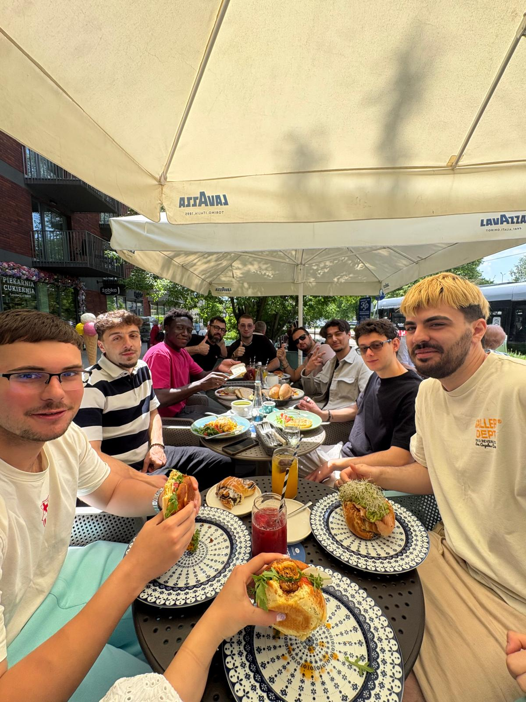
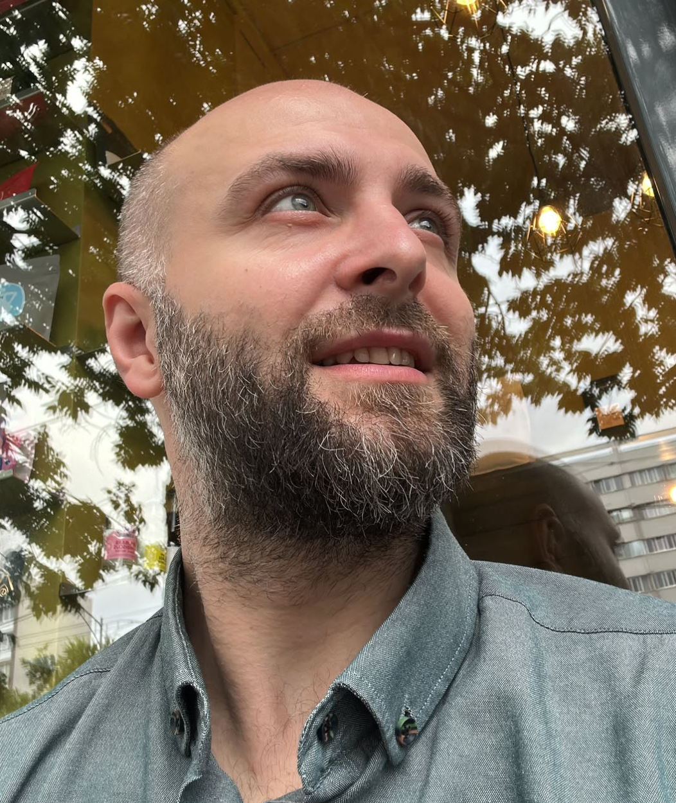
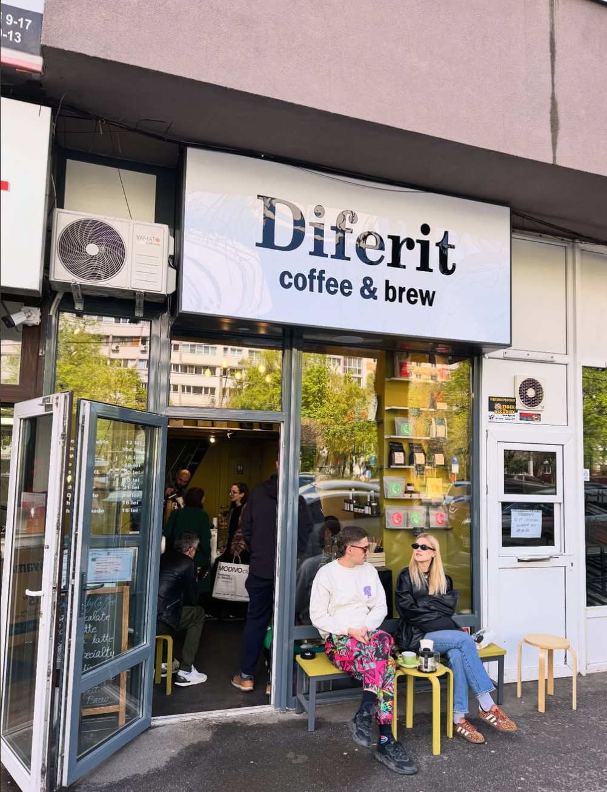

01 / TEHNOLOGIE & DEZVOLTARE
01 / TEHNOLOGIE & DEZVOLTAREECHIPA ELEMETRY
Andrei Ivascu
Tehnologie & dezvoltare
Arhitectura sistemului, colectarea si procesarea datelor, backend si integrarea agentilor AI.
andrei.ivasc5@yahoo.com ↗Transformam semnalele electrice in informatii despre consum, anomalii si starea echipamentelor.
Agentii AI ar putea semnala abaterea si propune verificarea echipamentului.
Elemetry este un concept de sistem inteligent de monitorizare energetica si mentenanta predictiva pentru echipamente industriale si cladiri comerciale.
Prin analiza parametrilor electrici si a tiparelor de consum, agentii AI urmaresc sa identifice comportamente anormale, pierderi de energie si semne timpurii ale unor potentiale defectiuni. Scopul este trimiterea alertelor explicabile pe care echipele operationale le pot transforma in verificari si interventii.
Construim impreuna produsul, de la primele ipoteze pana la implementare si testare.
01 / TEHNOLOGIE & DEZVOLTARETehnologie & dezvoltare
Arhitectura sistemului, colectarea si procesarea datelor, backend si integrarea agentilor AI.
andrei.ivasc5@yahoo.com ↗ 02 / PRODUS & UX
02 / PRODUS & UXProdus & UX
Cercetarea nevoilor clientilor, definirea cerintelor, experienta utilizatorului si modelul de business.
dianaciocoiu95@gmail.com ↗ 03 / MANAGEMENT & MARKETING
03 / MANAGEMENT & MARKETINGManagement & marketing
Coordonarea activitatilor si a livrabilelor, cercetarea pietei, strategia de comunicare si promovarea proiectului.
ioanaton@gmail.com ↗Impartirea rolurilor este propusa pentru organizarea proiectului. Dezvoltarea, testarea si documentarea raman responsabilitati comune.
Defectarea unui echipament industrial poate încetini sau bloca întregul flux de producție. Repararea ori înlocuirea lui durează și implică cheltuieli, iar fiecare oră de oprire aduce pierderi suplimentare firmei.
O singură defecțiune poate afecta toate etapele care depind de utilaj, provocând blocaje și întârzieri în livrare.
Diagnosticarea, procurarea pieselor și intervenția tehnică pot prelungi perioada în care echipamentul rămâne nefuncțional.
Pe lângă costul reparației, firma suportă pierderile din producția oprită și timpul în care oamenii și celelalte echipamente nu pot fi folosite eficient.
Platforma monitorizează funcționarea utilajelor și identifică din timp semnele unor posibile defecțiuni. Prin mentenanță predictivă, ajutăm firmele să intervină înainte ca problemele să provoace opriri și costuri majore.
Colectăm date despre consumul și funcționarea echipamentelor pentru a urmări starea acestora.
Detectăm abateri de la funcționarea normală care pot semnala uzură sau posibile defecțiuni.
Oferim alerte și priorități de verificare, astfel încât mentenanța să poată fi programată cu un impact cât mai mic asupra producției.
Limităm riscul opririlor neplanificate și al reparațiilor de urgență, susținând continuitatea fluxului de producție.
Ne adresăm companiilor care depind de funcționarea continuă a echipamentelor pentru a proteja marfa, a menține calitatea produselor și a respecta termenele de producție.
Responsabili de mentenanță, manageri de producție și echipe de control al calității.
Administratori de centre comerciale care depind de funcționarea instalațiilor de climatizare, refrigerare, transport și alimentare electrică pentru continuitatea activității și confortul vizitatorilor.
UTILIZATORIAdministratori tehnici și echipe de mentenanță.
Cine plătește? Conducerea companiei sau administratorul centrului comercial, din bugetele de mentenanță și operațiuni.
Nu pornim de la ideea ca AI-ul este unic. Solutii mature folosesc deja analiza avansata si inteligenta artificiala.
| Solutie / alternativa | Ce ofera | Ce urmarim la Elemetry |
|---|---|---|
| Schneider ElectricEcoStruxure Power Monitoring ExpertSursa oficiala ↗ | Monitorizare electrica, analiza energetica si identificarea consumului anormal. | Un flux simplu, orientat spre firme mai mici si investigarea abaterilor. |
| SiemensSenseye Predictive MaintenanceSursa oficiala ↗ | Analiza starii activelor si anticiparea riscului de defectiune cu AI industrial. | Legarea contextului energetic de alerte explicabile si feedback. |
| Procese manualeFacturi, foi de calcul, inspectii | Verificari periodice si analiza bazata pe experienta echipei. | Informatii centralizate si prioritizarea investigatiilor. |
Adaptăm platforma la echipamentele, procesele și obiectivele fiecărui client. De la dashboarduri personalizate la configurarea alertelor, construim o experiență relevantă pentru oamenii care o folosesc zilnic.
Afișăm indicatorii care contează pentru fiecare echipă: starea utilajelor pentru mentenanță, continuitatea producției pentru manageri și impactul financiar pentru conducere.
Configurăm alertele în funcție de rolul fiecărui echipament în activitate. Acordăm prioritate problemelor care pot bloca producția, deteriora marfa sau afecta calitatea.
Începem cu utilajele critice și extindem monitorizarea pe măsura nevoilor. Ajustăm dashboardurile și alertele împreună cu echipa clientului, pe baza utilizării și a feedbackului.
Valoarea urmărită: informații relevante pentru fiecare rol, decizii mai rapide și o platformă care evoluează odată cu afacerea.
Numarul de anomalii relevante confirmate de utilizatori, per locatie activa, pe luna.
Alerte confirmate ÷ alerte verificate. Urmarim si rata alarmelor false.
Intervalul dintre abaterea observata in date si alerta generata.
Locatii active, echipamente monitorizate si utilizatori activi saptamanal.
Timp economisit si consum evitat fata de un baseline comparabil.
Conversia pilot → client platitor si venitul lunar recurent (MRR).
Cati clienti continua sa foloseasca si sa plateasca produsul in timp.
Structura costurilor include dezvoltarea și operarea platformei, hardware-ul instalat în fabrici și montarea acestuia. Costul fiecărei implementări depinde de numărul utilajelor monitorizate, infrastructura existentă și nivelul de personalizare.
Modelul de venit combină abonamente lunare sau anuale cu o taxă inițială de implementare și servicii de mentenanță.
Acces la dashboarduri, monitorizare și alerte, cu stocarea și consultarea istoricului datelor. Tariful depinde de numărul echipamentelor, volumul datelor și perioada de păstrare.
Pachete superioare cu analize avansate, dashboarduri personalizate, rapoarte automate, integrări dedicate și suport prioritar.
Plată unică pentru montarea hardware-ului, conectarea la sistemele existente, configurarea platformei și instruirea echipei. Echipamentele sunt ofertate separat, în funcție de proiect.
Venituri recurente din verificarea și întreținerea echipamentelor instalate, recalibrarea senzorilor și asistență tehnică. Intervențiile la locație și înlocuirile se facturează conform contractului.
Pachetele și tarifele vor fi stabilite în funcție de complexitatea implementării și nivelul serviciilor oferite.
Customer Discovery: înțelegem mai întâi problema, apoi verificăm dacă soluția propusă răspunde nevoii identificate.
Elemetry a pornit de la o experiență personală. În timpul unui program Erasmus în Polonia, în 2026, noi, Andrei și Diana, ne-am împrietenit cu un student italian care deține o fabrică de mozzarella în Napoli. După Erasmus, am început să promovăm fabrica lui pe rețelele sociale, distribuindu-i videoclipurile de pe TikTok. În timp ce urmăream unul dintre ele, ne-am întrebat:
„Dacă se strică un utilaj la fabrica lui, oare câtă brânză se pierde?”
O astfel de defecțiune ar putea întrerupe producția, întârzia livrările și, în anumite condiții, compromite cantități importante de lapte sau mozzarella. Într-un scenariu grav, pierderile ar putea include cantități mari de produse, pe lângă costurile reparațiilor și timpul necesar reluării activității.
Am realizat că problema potențială nu este doar defectarea unui utilaj, ci faptul că o companie ar putea descoperi prea târziu că un echipament esențial nu mai funcționează corect.
Această observație ne-a determinat să explorăm problema opririlor neplanificate și a lipsei unor avertizări timpurii, pornind de la industria alimentară și extinzând ipoteza către alte afaceri care depind de echipamente.
Punctul de plecare a fost o întrebare, nu o problemă deja validată. În această etapă nu aveam dovezi că fabrica prietenului nostru suferise asemenea pierderi sau că metodele sale actuale de mentenanță erau insuficiente. Tocmai de aceea, următorul pas a fost Customer Discovery: să discutăm cu persoane care gestionează astfel de activități și să verificăm dacă riscul imaginat de noi reprezintă o problemă reală, frecventă și suficient de importantă pentru ele.
Pornind de la problema potențială identificată în contextul fabricii de mozzarella, am început să discutăm în echipă despre cum am putea preveni situațiile în care o defecțiune neașteptată afectează întregul proces de producție.
Diana, care lucrează în domeniul BMS (Battery Management Systems), a venit cu ideea de a adapta principiile acestor sisteme la monitorizarea echipamentelor industriale.
Un BMS monitorizează și gestionează funcționarea bateriilor, urmărind parametri precum tensiunea, curentul și temperatura pentru a identifica situații anormale și a proteja bateria. Pornind de la aceste principii de monitorizare și protecție, ne-am întrebat dacă o abordare similară ar putea fi aplicată echipamentelor dintr-o fabrică, astfel încât informațiile despre utilaje să nu mai fie analizate separat, ci să fie disponibile într-un singur loc.
Ideea inițială a fost dezvoltarea unei platforme care să centralizeze informațiile despre funcționarea echipamentelor și să ofere o imagine de ansamblu asupra întregului proces de producție.
Am imaginat un sistem care să poată:
Ulterior, am extins conceptul prin integrarea unor agenți AI care ar putea analiza istoricul datelor, identifica tipare neobișnuite și oferi recomandări pentru verificarea echipamentelor. Pe termen lung, obiectivul ar fi ca platforma să contribuie și la mentenanța predictivă, prin identificarea unor indicii care pot preceda anumite defecțiuni.
În exemplul fabricii de mozzarella, ne-am imaginat un dashboard în care proprietarul ar putea vedea starea echipamentelor esențiale pentru producție și răcire. Dacă unul dintre acestea ar începe să funcționeze diferit față de normal, sistemul ar putea genera o alertă, oferind posibilitatea unei intervenții mai rapide.
Am numit această idee Elemetry, pornind de la asocierea dintre electrical și telemetry. Numele reflectă direcția inițială a proiectului: utilizarea datelor electrice și operaționale pentru a înțelege mai bine starea echipamentelor.
În această etapă, soluția reprezenta o ipoteză tehnică, nu un produs validat. Nu știam încă dacă firmele aveau nevoie de o asemenea platformă, ce sisteme foloseau deja, ce date puteau furniza sau dacă analiza parametrilor electrici ar fi suficientă pentru detectarea timpurie a defecțiunilor.
De aceea, am decis să nu pornim direct cu implementarea, ci să verificăm mai întâi, prin Customer Discovery, dacă problema pe care încercam să o rezolvăm era într-adevăr relevantă pentru potențialii clienți.
După ce am formulat ipoteza problemei și am conturat o posibilă soluție, următorul pas a fost să descoperim cine se confruntă cu această problemă în realitate și cât de importantă este pentru activitatea sa.
Inițial, ne-am concentrat pe ferme și producători din industria alimentară, pornind de la exemplul prietenului nostru italian, cunoscut în timpul programului Erasmus din Polonia, care deține o fermă de vaci și o fabrică de mozzarella. Consideram că aceste afaceri ar putea fi deosebit de vulnerabile la defecțiunile echipamentelor, deoarece procesele de producție și păstrare a alimentelor depind de funcționarea continuă a anumitor instalații.
Totuși, discutând despre conceptul Elemetry, ne-am dat seama că problema ar putea exista și în afara industriei alimentare.
Toate pot depinde de echipamente electrice a căror funcționare poate fi monitorizată și care necesită întreținere. Fie că vorbim despre instalații de răcire, pompe, motoare, aparate de preparare a cafelei sau echipamente de producție, o defecțiune poate afecta activitatea unei afaceri.
Astfel, am extins ipoteza inițială: Elemetry ar putea fi relevant pentru orice companie care utilizează echipamente electrice suficient de importante pentru activitatea sa și ale căror date pot fi colectate și analizate printr-un sistem de monitorizare inspirat de principiile BMS. Compatibilitatea cu echipamentele și accesul la date urmau să fie verificate pentru fiecare caz.
Această ipoteză nu însemna însă că toate companiile ar avea aceeași problemă sau că ar avea nevoie de aceeași soluție.
Pentru Customer Discovery, am decis să căutăm persoane din mai multe tipuri de afaceri:
Am ales intenționat afaceri de dimensiuni diferite și din domenii diferite. Scopul era să înțelegem dacă problema opririlor neplanificate apare în mai multe contexte sau dacă este suficient de importantă doar pentru anumite categorii de clienți.
După stabilirea segmentelor de clienți, am început procesul de Customer Discovery prin intermediul contactelor personale și al discuțiilor directe cu persoane care lucrează în afaceri dependente de echipamente electrice.
Am pornit de la industria alimentară, unde a apărut ideea Elemetry, și am încercat treptat să ajungem și la alte domenii: cafenele, retail și fabrici.
Am descoperit că una dintre primele provocări nu este doar identificarea potențialilor clienți, ci și obținerea accesului la persoanele care cunosc problemele tehnice și pot lua decizii privind mentenanța echipamentelor.
Primul contact a fost Antonio, prietenul pe care Andrei l-a cunoscut în timpul programului Erasmus din Polonia și a cărui activitate a inspirat ideea Elemetry.

Antonio are o fermă de vaci și o fabrică de mozzarella în Italia. Andrei i-a scris pe Instagram ca să afle cum lucrează și ce se întâmplă când se strică o mașină.
Am păstrat discuția în engleză, cu formulări ușor simplificate pentru citire. Primele patru răspunsuri au venit împreună, numerotate; aici le-am așezat lângă întrebările corespunzătoare. După ele, Andrei a revenit cu două întrebări despre ideea noastră. Celelalte întrebări trimise inițial nu au primit răspunsuri separate în capturile disponibile.
Dairy Farm & Mozzarella Production | Italy
What does a typical working day look like for you, and which equipment is most important for your daily operations?
We start with milk delivery and quality checks, then make mozzarella and other dairy products. The main machines are the stretching and forming machines, packaging equipment and refrigeration systems. They keep production going and help us maintain quality.
Can you tell me about the last time a piece of equipment didn’t work as expected? What happened?
A typical problem is a breakdown in the automated line, often because of a faulty sensor or a mechanical part. When that happens, we have to stop the automated process for a while.
How did that problem affect your operations, and what did you do to resolve it?
If a machine breaks down, we can do most of the production manually. It takes a bit longer, but we can keep working without delaying deliveries. In the meantime, we repair the equipment ourselves or call specialised technicians.
How do you currently handle equipment inspections and maintenance? Have you tried changing or improving this process? What were the results?
We check the machines every day and do regular maintenance, preferably when production is stopped. We try to prevent breakdowns that way, but most problems still happen unexpectedly. Even with regular checks, they’re hard to predict.
If you had a centralised system fitted to your machines, with alerts on your phone warning you about a possible problem, would that be useful to you?
I think something like that would be quite difficult to achieve, at least in dairy production. But in an ideal world, it would definitely be very useful and convenient.
Why would it be difficult to achieve?
I think the biggest challenge is that a dairy factory has so many different systems: steam boilers, electrical equipment, refrigeration and production machines. Plus, we’re constantly working with water and humidity.
For example, just a few days ago, a sensor on our PFM packaging machine stopped working because of humidity. The conveyor kept pushing mozzarella into the machine even while the bags were closing. We ended up with overfilled bags, damaged mozzarella and a real mess.
So even a small issue can cause big problems. That’s why I think predicting these failures isn’t so simple.
They can keep working manually.
Antonio said most production steps can be done by hand when a machine breaks down. That makes the work slower, but lets them keep deliveries on time. A broken machine does not always stop the whole factory.
A small fault can still damage products.
His later example added something important: humidity stopped a sensor on the PFM packaging machine, but the conveyor kept feeding mozzarella while the bags were closing. He reported overfilled bags and damaged mozzarella. We do not know how much product was affected or what it cost.
Regular checks do not catch everything.
They inspect machines daily and carry out maintenance, yet unexpected problems still happen. Antonio pointed to the mix of equipment and the constant water and humidity as reasons why predicting failures would be difficult.
“Useful in an ideal world” leaves a lot to check.
Antonio liked the idea of phone alerts, but also questioned whether it could work in his factory. We asked about a hypothetical solution, so his answer does not tell us whether he would try or buy Elemetry. We also have no evidence yet that current and voltage measurements would detect the packaging fault he described.
We initially focused on machines stopping production. Antonio showed us two different situations: his team can often switch to manual work, but a packaging fault can damage mozzarella before the process is stopped.
That gives us a more specific question to investigate: what signals, if any, would reveal a fault like the PFM sensor problem early enough to act? We need to understand the machine and its existing controls before claiming Elemetry could help.
We also need shorter follow-up questions about actual incidents: how the fault was noticed, how long it took to fix and what was lost. The initial batch of questions did not give us those details.
Antonio gave us a concrete example of a sensor failure affecting products, alongside a way his team keeps working during other breakdowns. Both matter when judging how useful monitoring would be.
His replies give us something specific to investigate, but they do not show that Elemetry can predict these failures or that he would pay for it.
Diana a vorbit pe WhatsApp cu Mihai, un prieten care are o fermă în Teleorman. Am vrut să aflăm ce utilaje folosește și ce se întâmplă când se strică.
Discuția a avut loc pe 31 octombrie 2026. Mai jos am păstrat felul în care au vorbit, cu mici corecturi de scriere și mesaje consecutive unite. Nu este o transcriere integrală: am scos schimburile fără legătură cu subiectul, iar unde am scurtat explicații am indicat acest lucru.
Fermă agricolă | Teleorman, România
Partea 1 — Utilajele din fermă
Deci, cu ce fel de aparate lucrezi la fermă?
Multe rău. Îți le spun: mașină de fertilizat, mașină de erbicidat, autopropulsată, mașină de împrăștiat bălegar, tractoare, combine, grele, lăcustă, joker, mașină de selectat, disc ușor, disc greu, scarificator, plug. Mai bag?
E bun. Acum toate sunt operate manual sau ai și ceva automatizări?
Manual doar învârți cheia. Merg singure, întorc singure, ridică singure aripile, se reglează din soft.
Deci, practic toate astea sunt chestii cu motor care fac ceva pe câmp?
Aproape toate. Unele se leagă la tractor. Autopropulsata, combinele și tractoarele au motor propriu.
Partea 2 — Ce se strică
Bun, acum cât de des se strică mașinile astea și care sunt cauzele?
Enervant de des.
Și de la ce se strică?
Se mai rupe câte o curea, sare un rulment, se încinge și ia foc. Mai sunt și băieții câteodată neatenți. Dar îți dau câteva exemple de erori umane pe care nu le previn senzorii, dacă vrei.
Deci numai chestii mecanice? Ce nu ar fi de la mâna de om?
În principal chestii mecanice, dar acum avem o problemă la o semănătoare nouă Horsch pe care toată țara nu a reușit să o regleze. Teoretic ar fi o problemă din soft, practic nici noi nu știm de ce nu respectă adâncimea de semănat.
Gen face prea mult sau?
Nu respectă adâncimea. La altă firmă e problema că nu respectă densitatea. Când utilajele mai vechi o fac mai bine decât cele teoretic mai precise, cred că e o problemă din soft.
Adică găsești o sămânță la 2 cm, alta la 6 cm și eu am setat 4 cm. Și e foarte important să semeni la adâncimi diferite în funcție de cum se prezintă solul în ziua aia, cum crezi că urmează să plouă și ce microelemente plănuiești să dai.
Partea 3 — De ce senzori are nevoie
Deci nu prea ai nevoie de senzori care să măsoare tensiune și curent, având în vedere că totul e mecanic sau cu motor termic?
Am nevoie de mulți senzori, dar nu chiar de tensiune.
Bun, de ce senzori?
Temperatură, presiune, turație, debit, funcționarea motorului. MAP, MAF, temperatura aerului la admisie, presiune în rampă, apă în filtrul de motorină.
Temperatura lichidului de răcire, că se supraîncălzește motorul ușor vara. Anul trecut a luat foc un tractor. L-am stins repede, dar a costat 20k reparația.
Mihai a mai trimis o listă cu GNSS/RTK, radar de viteză, senzori de direcție, poziție și patinare, apoi explicații despre camere și controlul duzelor la stropit, inclusiv PWM. Am scurtat aici lista tehnică; din mesaje nu reiese că toate aceste sisteme sunt instalate la ferma lui. Pentru reparația tractorului a scris „20k”, fără să precizeze moneda.
Partea 4 — Unde se potrivește ideea noastră
Păi nu, că aparent nu te ajută. Deci ce vrem noi să vindem e un sistem de monitorizare preventivă prin monitorizarea curentului și tensiunii.
Practic, cel mai bun caz e o fabrică unde mașinile lucrează în serie. Dacă se strică una, celelalte merg degeaba și pierzi bani că nu mai produci.
Mi-am dat seama că nu prea merge la fermă, unde nu ai o astfel de linie și majoritatea sculelor sunt cu motor termic.
Am scurtat exemplul Dianei cu fabrica de creioane. În capturile primite nu apare un răspuns al lui Mihai după această explicație.
Utilajele se strică, iar unele reparații costă mult.
Mihai a dat exemple de curele, rulmenți și supraîncălzire. A povestit și despre tractorul care a luat foc, cu o reparație de „20k”. Nu știm moneda sau cât de des au loc incidente atât de grave.
Problemele lui nu se reduc la curent și tensiune.
A vorbit despre temperatură, presiune și funcționarea motorului. La semănătoare, setarea era de 4 cm, dar găsea semințe la 2 și la 6 cm. El bănuiește o problemă de soft; cauza nu este stabilită.
Lista de senzori nu este un inventar al fermei.
Mihai cunoaște multe sisteme de monitorizare și automatizare. Trebuie însă să-l întrebăm ce are efectiv pe fiecare utilaj și ce date poate vedea, înainte să presupunem că ferma folosește toate tehnologiile enumerate.
Relația de prietenie a influențat discuția.
Mihai s-a oferit să dea răspunsuri care să ne ajute cu senzorii pe care vrem să-i vindem și, mai târziu, să se prefacă că nu îi are. Diana i-a cerut să răspundă pe bune. Nu folosim ofertele acestea ca dovadă de interes pentru produs. În plus, unele întrebări ale Dianei sugerează deja un răspuns, așa că trebuie să fim mai atenți la următoarele interviuri.
Am pornit de la ideea că o fermă cu multe utilaje ar putea avea nevoie de Elemetry. Din exemplele lui Mihai nu reiese însă că măsurarea curentului și tensiunii ar rezolva problemele despre care ne-a povestit.
Vrem să discutăm mai departe cu oameni din fabrici unde utilajele electrice lucrează în aceeași linie. Acolo trebuie să aflăm ce se întâmplă concret când se oprește o mașină și dacă datele electrice ar putea ajuta. Deocamdată, potrivirea cu acel segment rămâne de verificat.
Mihai ne-a dat exemple utile de probleme din ferma lui, dar discuția nu ne arată că ar avea nevoie de Elemetry sau că ar plăti pentru el. Ne-a ajutat să vedem unde ideea noastră nu se potrivește încă și să ne corectăm felul în care punem întrebările.


Andrei a discutat față în față cu Claudiu, directorul comercial al cafenelei, care lucrează și cu un bar mobil la evenimente. Au vorbit despre aparatele de care depinde servirea și despre ce face când unul nu mai merge.
Dialogul de mai jos este refăcut din notițele discuției, cu mici reformulări pentru citire. Nu este o transcriere cuvânt cu cuvânt.
Cafenea și bar mobil de cafea | România
Cum arată o zi obișnuită de lucru? De ce echipamente depinzi cel mai mult?
Avem trei râșnițe, un espressor și un kettle. Râșnițele și espressorul sunt baza unei cafenele. Cam 90% din activitate mi-o fac cu aparatele astea.
Și ai nevoie de curent stabil, fără fluctuații care să le strice.
Povestește-mi despre ultima dată când un echipament nu a mers cum te așteptai. Ce s-a întâmplat?
Eram la un eveniment într-un hotel. Cei de la tehnic au tot scos și băgat aparate în priză, iar espressorul meu a tras prea multă apă. El trage apă ca să nu se ardă încălzirea, dar atunci nu a mai funcționat.
Ne-a dat peste cap evenimentul. Oamenii erau supărați că nu aveau cafea.
Cât timp nu ați putut servi cafea? Ce ai făcut și cât te-a costat?
Patru ore și jumătate. Am căutat soluții și am mers la un prieten să aduc alt espressor, dar nici prizele nu țineau. De asta a durat atât.
Am apelat la electricianul hotelului și până la urmă am găsit o priză care ducea 4,8 kW. Eu cer mereu alimentare care să țină cam 5 kW.
M-a costat cam 150 de euro. Putea să fie 500, dar cei de la eveniment mă știau și au înțeles că nu fusese doar vina mea, că și cei de la tehnic umblaseră la prize.
Cum te ocupi acum de verificări și întreținere?
Le fac singur, că știu aparatele. Săptămânal le curăț și le verific. Mă uit dacă s-a schimbat ceva, dacă au oscilații sau dacă se încălzesc când râșnesc. Dacă e nevoie, chem un electrician.
În perioadele aglomerate, ce vă încetinește cel mai mult servirea?
Espressorul, că are un singur grup. Așa am gândit lucrurile: să aștepte râșnițele după espressor, nu espressorul după râșnițe. Când vreau să cresc capacitatea, schimb o singură componentă, nu toate aparatele și să dau o grămadă de bani.
Ai mai avut o situație în care nu ai putut folosi un aparat? Cum ați continuat?
Tot la un eveniment, s-a desprins o mufă în espressor la transport și nu mai mergea. Dar îl instalasem cu o zi înainte, așa că am avut timp să aduc alt aparat pentru a doua zi. Atunci servirea nu a fost afectată.
La ultima intervenție de service, cine a observat problema, pe cine ai chemat și cât a durat?
La hotel am văzut problema și am încercat întâi să o rezolv singur. N-am reușit, pentru că trebuia reglată sonda care stabilește nivelul apei din boiler. Am chemat un tehnician și a rezolvat-o în 30 de minute.
La lucrurile astea apelez la profesioniști, nu-mi mai bat capul, că n-are rost. Dacă se strică un frigider, la fel: garanție sau tehnician.
La final, despre ideea de monitorizare
În notițe apare și reacția lui Claudiu la ideea unui program care ar anunța problemele din timp. Întrebarea exactă nu a fost consemnată.
Ar fi fabulos să ai un astfel de program, să nu mai ai întreruperi și probleme de productivitate. Dacă plec la Cluj cu barul mobil și se strică espressorul, tot evenimentul e pa.
De asta contează să ajungi cu șase-șapte ore înainte sau cu o zi, să mai ai timp să-ți trimită cineva ceva din București. Altfel, te-a pus pe butuci.
Fără espressor, servirea se poate opri.
Claudiu estimează că aproximativ 90% din activitate depinde de aparatele enumerate. La hotel, lipsa unui espressor funcțional și dificultatea de a alimenta aparatul de schimb au însemnat patru ore și jumătate fără cafea.
Avem costul unui incident, nu o medie.
Claudiu a spus că incidentul l-a costat aproximativ 150 €, iar suma ar fi putut fi 500 €. Nu am lămurit ce includeau acești bani sau cât de des se întâmplă ceva asemănător.
Problema aparatului și alimentarea de la locație trebuie înțelese separat.
El a legat incidentul de intervențiile la prize și de apa trasă de espressor. A descris și reglarea sondei din boiler, plus dificultățile de alimentare a aparatului de schimb. Sunt explicațiile lui, nu un diagnostic verificat de noi. Valorile de 4,8–5 kW sunt cele raportate în discuție.
Are deja câteva soluții care îl ajută.
Își verifică aparatele săptămânal, apelează la tehnicieni și caută aparate de schimb. Când mufa s-a desprins la transport, instalarea cu o zi înainte i-a dat timp să înlocuiască espressorul fără să afecteze evenimentul. Cele 30 de minute menționate pentru service sunt distincte de cele patru ore și jumătate fără servire.
Ideea îi place, dar nu am discutat o achiziție.
Reacția la un program care ar preveni întreruperile a fost pozitivă. Exemplul cu deplasarea la Cluj a fost ipotetic, nu un alt incident relatat. Nu avem un buget, un acord de testare sau dovezi că Elemetry ar fi detectat defecțiunile descrise.
Discuția ne-a arătat că merită să ne uităm și la afaceri mici care depind de un singur aparat. Pentru Claudiu, posibilitatea de a găsi repede un espressor de schimb și o alimentare potrivită a contat direct la reluarea servirii.
Trebuie însă să vedem ce am putea detecta efectiv: o problemă de alimentare, o funcționare neobișnuită a aparatului sau altceva. Nu putem presupune că o mufă desprinsă la transport ori o problemă la sonda boilerului ar fi fost anticipate doar din curent și tensiune.
La următoarea discuție vrem să clarificăm costurile incidentului, cât de des apar probleme și ce ar aduce în plus monitorizarea față de verificările și soluțiile pe care le folosește deja.
Claudiu ne-a povestit două situații cu rezultate diferite: una a oprit servirea ore întregi, iar cealaltă a fost rezolvată înainte de eveniment. Contează cât de repede observă problema și ce alternative are la îndemână.
Avem exemple concrete de investigat, dar încă trebuie să aflăm dacă Elemetry poate ajuta în astfel de situații și dacă ar merita investiția pentru el.
Ioana a discutat cu persoane din cercul său de cunoștințe care dețin fabrici, încercând să obțină interviuri despre funcționarea echipamentelor și problemele de mentenanță.
Deși au existat discuții inițiale, persoanele contactate nu au dorit să participe la interviuri.
Am păstrat acest rezultat în documentație deoarece fabricile reprezintă unul dintre segmentele cele mai importante pentru Elemetry, dar și unul dintre cele mai greu accesibile.
În lipsa unor interviuri, nu putem trage concluzii despre problemele acestor fabrici sau despre interesul lor pentru soluția propusă.
Am încercat să discutăm și cu persoane care lucrează în magazine din rețelele Mega Image, Lidl și Kaufland.
Am ales sectorul retail deoarece supermarketurile folosesc instalații frigorifice și alte echipamente electrice importante pentru funcționarea magazinelor.
Persoanele abordate nu au dorit să ne ofere interviuri, astfel că nu am obținut informații suficient de detaliate pentru a evalua problemele tehnice din acest sector.
Aceste încercări ne-au arătat și o limitare a metodei noastre inițiale: angajații cu care putem intra ușor în contact nu sunt neapărat persoanele responsabile de mentenanță sau de achiziția sistemelor de monitorizare.
Până în acest moment, am realizat trei discuții cu potențiali utilizatori sau persoane relevante pentru domeniile explorate: doi reprezentanți ai unor ferme și directorul comercial al unei cafenele.
Am încercat, de asemenea, să obținem interviuri de la proprietari de fabrici și angajați din retail, însă fără succes.
Acest proces ne-a evidențiat câteva aspecte importante:
În continuare, vrem să depășim cercul de cunoștințe personale și să folosim canale de contact mai variate:
Deși am explorat mai multe categorii de afaceri, segmentul nostru prioritar rămâne cel al fabricilor cu procese de producție interdependente, în care defectarea unui echipament poate afecta întregul flux tehnologic.
Considerăm că aici impactul potențial al opririlor neplanificate ar putea fi mai mare, iar o soluție de monitorizare centralizată ar putea aduce o valoare importantă.
Totuși, aceasta rămâne o ipoteză de verificat, nu o concluzie demonstrată prin interviurile realizate până acum. Pentru a o valida, avem nevoie de discuții suplimentare cu persoane care gestionează efectiv producția, mentenanța și bugetele din fabrici.
Principala provocare a următoarei etape este să ajungem la acești oameni și să aflăm dacă problema imaginată de noi este una pe care o întâmpină în realitate.
La început, ne imaginam Elemetry ca pe o platformă de monitorizare care ar putea fi utilizată de aproape orice afacere ce depinde de echipamente electrice: ferme, cafenele, magazine, supermarketuri sau fabrici.
În urma procesului de Customer Discovery, am început să reconsiderăm această abordare.
Discuțiile cu reprezentanții fermelor și cu Claudiu, dar și dificultățile întâmpinate în încercarea de a contacta proprietari de fabrici, ne-au determinat să ne întrebăm dacă toate aceste categorii de afaceri reprezintă într-adevăr clienți potriviți pentru Elemetry.
Am realizat că simplul fapt că o afacere utilizează echipamente electrice nu înseamnă automat că are nevoie de un sistem complex de monitorizare și mentenanță predictivă.
În cazul afacerilor mici sau al celor în care echipamentele funcționează relativ independent, costul și complexitatea unei asemenea soluții ar putea fi dificil de justificat. Aceasta este însă o ipoteză pe care trebuie să o verificăm în continuare.
În schimb, considerăm că Elemetry ar putea avea o valoare mai mare în fabricile cu fluxuri de producție interdependente, unde defectarea unui singur echipament poate afecta mai multe etape ale procesului și poate provoca oprirea întregii linii.
Customer Discovery nu ne-a determinat să abandonăm ideea inițială, ci să îi restrângem domeniul de aplicare.
| Aspect | Viziunea inițială | Direcția actuală |
|---|---|---|
| Clienți | Orice afacere cu echipamente electrice | Prioritar, fabrici cu procese de producție interdependente |
| Problema urmărită | Monitorizarea generală a echipamentelor | Identificarea timpurie a problemelor care pot întrerupe producția |
| Valoarea propusă | Centralizarea informațiilor și alertarea | Reducerea riscului de opriri neplanificate și a pierderilor asociate |
| Utilizatori de interes | Proprietari și angajați din diverse afaceri | Responsabili tehnici, ingineri de mentenanță și manageri de producție |
Nu am modificat încă funcționalitățile tehnice ale produsului pe baza unor cerințe validate. Schimbarea principală este la nivel de poziționare, segment de clienți și direcție de cercetare.
Am realizat că, pentru a înțelege mai bine piața și disponibilitatea reală de cumpărare, trebuie să discutăm cu persoane care lucrează direct cu echipamentele din fabricile industriale.
În special, vrem să ajungem la ingineri de mentenanță, responsabili de automatizări, manageri tehnici și manageri de producție.
Aceștia ne-ar putea ajuta să înțelegem:
Principala concluzie este că trebuie să înțelegem mai bine un segment industrial specific înainte de a construi o soluție generală pentru toate tipurile de afaceri.
În acest moment, nu considerăm că Elemetry este pregătit să treacă la etapa de Customer Validation, în care ar trebui să testăm efectiv interesul de cumpărare și disponibilitatea clienților de a plăti pentru soluția noastră.
Deși am realizat trei discuții relevante pentru Customer Discovery, acestea au acoperit un număr redus de persoane și segmente diferite. Mai important, nu am reușit încă să obținem interviuri cu reprezentanți tehnici ai fabricilor industriale, segmentul pe care dorim să îl prioritizăm.
Prin urmare, nu avem suficiente informații pentru a confirma că:
Înainte de Customer Validation, ne propunem să continuăm interviurile cu persoane din mediul industrial, să identificăm probleme concrete întâlnite în trecut și să înțelegem ce soluții au încercat deja.
Abia după ce vom avea dovezi mai clare privind existența și importanța problemei vom putea testa o propunere de valoare mai precisă, un prototip relevant și, ulterior, disponibilitatea de cumpărare.
Customer Discovery ne-a ajutat să înțelegem că ideea inițială era prea generală și că trebuie să ne concentrăm pe un segment de clienți mai specific.
Nu considerăm lipsa validării actuale un eșec, ci un rezultat util al procesului: am identificat ce nu știm încă, ce ipoteze trebuie testate și cu cine trebuie să discutăm în continuare.
Următorul nostru obiectiv nu este să vindem Elemetry, ci să demonstrăm că rezolvăm o problemă reală, importantă și insuficient adresată pentru fabricile pe care vrem să le deservim.
Fiecare milestone va adauga aici livrabile, experimente, dovezi si lucrurile invatate.
Concept, echipa, problema, propunere de valoare, segmente de clienti, competitie, diferentiere, metrici si model economic initial.
Am documentat problema, soluția inițială, planul și demersurile de Customer Discovery, impactul asupra direcției produsului și motivele pentru care nu suntem încă pregătiți pentru Customer Validation. Sunt incluse toate cele trei interviuri, cu Antonio, Mihai și Claudiu, împreună cu observațiile și concluziile lor. Dovezile suplimentare vor fi adăugate pe măsură ce sunt disponibile.
Vom adauga mockup-urile si pagina produsului destinata clientilor. Fiki-ul ramane documentatia proiectului.
Personas, fluxuri, user stories / use cases si arhitectura vor fi prezentate aici dupa realizare.
Vom documenta testele de utilizabilitate, feedback-ul primit si modificarile aduse designului.
Vom adauga analiza pietei, segmentarea si cercetarea competitiei, cu surse si concluzii.
Vom publica functionalitatile implementate, demonstratia MVP si rezultatele verificarilor.
Vom documenta demersurile comerciale si rezultatele reale obtinute. La M1 nu exista vanzari raportate.
Prezentarea proiectului va fi adaugata aici cand este disponibila.
Versiunea finala va reuni progresul, livrabilele si concluziile proiectului.
Structura etapelor urmeaza calendarul disciplinei ↗. Etapele viitoare nu sunt marcate drept finalizate.